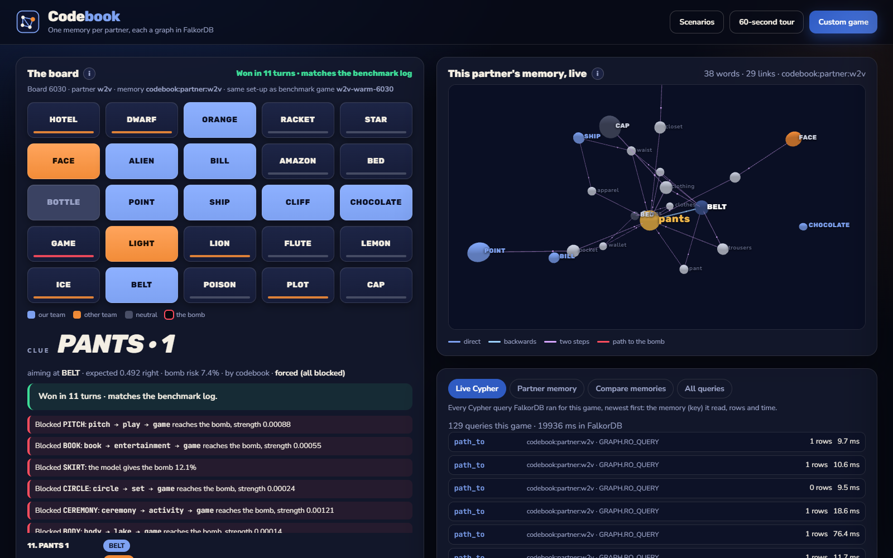
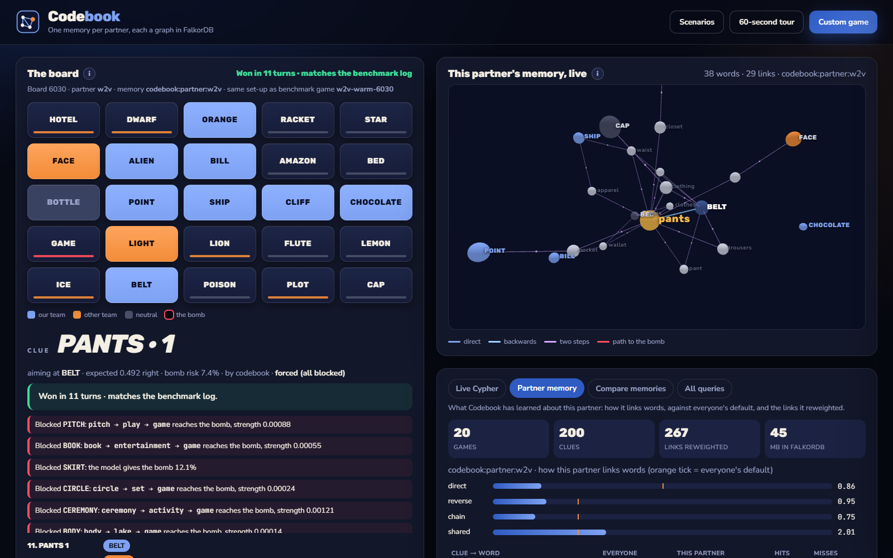
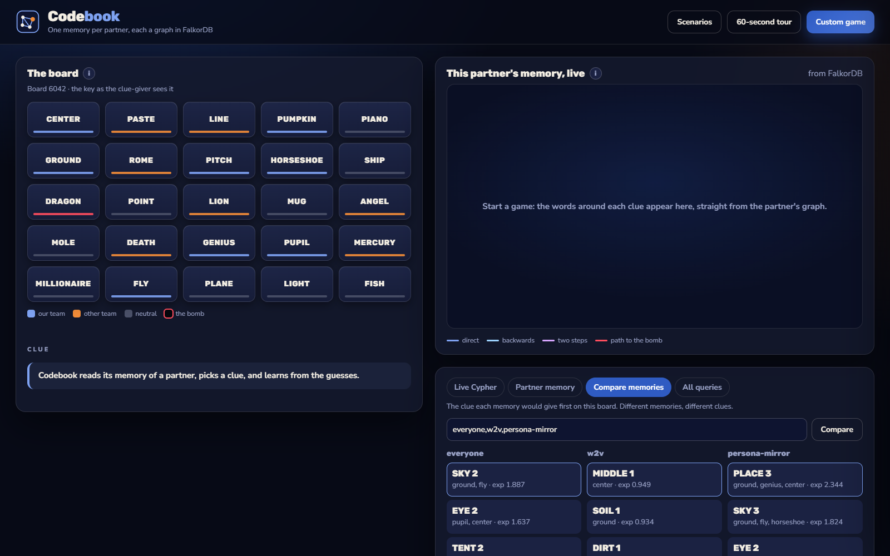

Hand work to another agent, and what it learned about you is lost.
People don't work that way: good partners build a shorthand. Say ocean, and they think wave, not bank.
02 · Our question
Can an agent keep a separate memory of each person it works with, and does that memory measurably help?
To measure it, we needed a task where knowing your partner can be scored. A word game is exactly that.
03 · The test
Codenames in 20 seconds
1
25 word cards. Our AI, the clue-giver, knows which are ours.
2
It says one word and a number: OCEAN · 2.
3
Its partner sees only the words, and guesses.
4
One card is the bomb. Touch it, and you lose.
Good clues depend on how this partner links words: that is what the memory learns.
CLUEOCEAN · 2
WAVE
PIANO
ROBOT
MOON
CASTLE
APPLE
SHELL
GLASS
TORCH
TRAIN
LION
PAPER
FIRE
KEY
BOOK
RING
SNOW
BRIDGE
FOREST
MASK
CLOCK
HONEY
PLANE
DRUM
STAR
ourstheirsneutralthe bombwhat the clue aims at
Concept visual
04 · What Codebook does
One shared memory, plus a private copy per partner.
A memory is a graph: words linked by how strongly one brings the other to mind.
Everyone's memory: 39k words and 497k links in FalkorDB, a graph database.
Each partner gets a copy in 0.7 s. Every guess makes its links stronger or weaker.
Everyone's memory
39k words · 497k weighted links
GRAPH.COPY · 0.7 s
word2vec bot
its own graph
Claude
its own graph
you
your own graph
Concept visual
05 · How a turn works
Every turn: find, score, block, learn.
Find
Cypher, the graph query language, reads 4 kinds of link from each clue to the board.
Score
Simulate this partner's picks; rank the clues.
Block
Refuse any clue whose chain of links reaches the bomb.
Learn
Re-weight this partner's links after each guess.
The live view, board 6030: the clue, a plain-English narration and the partner's memory in 3D

06 · Architecture
Any agent plugs in. FalkorDB holds every memory.
Any AI agent
6 MCP tools (MCP is the standard way AI agents call tools)
Command line
codebook setup · train · play · eval · ui
Live view
every Cypher query as it runs, and the 3D graph
↓
Codebook enginescores every clue · blocks risky ones · learns from each guess
↓
FalkorDB
codebook:population
everyone's memory, read-only
codebook:partner:<id>
one per partner, each locked to its own database user
07 · Why FalkorDB
A memory per person is built in.
1 graph
per partner, each its own key
0.7 s
GRAPH.COPY makes a new partner's memory
1 user
per partner: database ACLs lock each graph to its owner
Milliseconds
Cypher traversals, every turn
11 MB
DUMP/RESTORE carries a memory to another server
Restart-proof
the same games replay with the same fingerprint
Remove FalkorDB and all 13 commands fail: there is no fallback store.
08 · Results
3 of 4 promises kept, all written before testing.
Bomb hits
32%→21%
word2vec bot, 200 boards it never saw: its own memory vs everyone's
Turns to finish
15.55→14.39
lower is better; a lost game counts 25
The more games together, the better it plays
word2vec bot · turns to finish on the same 200 boards
Not significant, and said plainly: the GloVe bot, and the handover to Claude Sonnet (bomb hits 40% → 22%, but only 40 boards).
09 · Shared memory
Another AI can use the memory, safely.
Claude gives clues from the bot's memory through MCP tools, with no database password; risky clues are still blocked. You can play too, and your own memory appears.
What one partner's memory holds

Same board, three memories, three clues

10 · Why it matters
Every agent that works with people needs a memory of each person.
git clone https://github.com/Rajendra465/graph-hack-sub.git && cd graph-hack-sub
docker compose up -d # FalkorDB 6.0.2
uv sync --extra dev
uv run codebook setup --source conceptnet --vectors
uv run codebook ui # http://127.0.0.1:7811
Limits, plainly: everyone's memory is built from ConceptNet 5.7, public word-association data. The partner model is small: 20 games find a habit, not every favourite word.